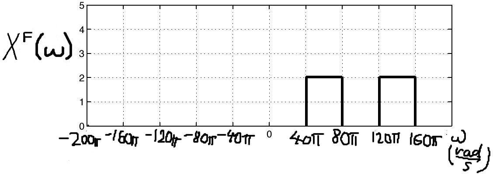
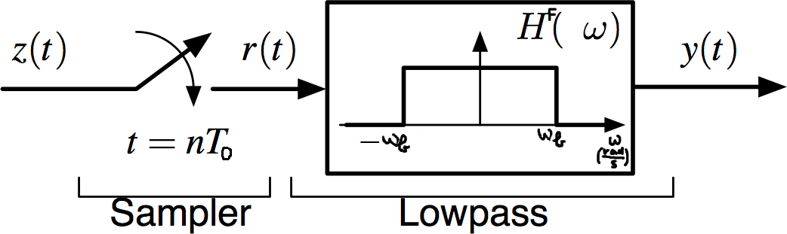

\( \def\df{\triangleq} \def\E{\mathrm{e}} \def\J{\mathrm{j}} \def\upi{π} \def\Exp{{\rm E}\,} \DeclareMathOperator{\Pr}{Pr} \DeclareMathOperator{\Realpart}{Re} \def\tb{\text{b}} \def\tc{\text{c}} \def\td{\text{d}} \def\tF{\text{F}} \def\dif{{\rm d}} \)
Impulse train: $p(t) = \sum_{k=-\infty}^{+\infty} \delta(t-k T_0)$.
The Fourier transform $X^\tF(\omega)$ of $x(t)$ is shown below:

Note that $X^{\rm F}(\omega)$ is real-valued.
(a) The signal $x(t)$ is sampled with sampling period $T_0=10$ms = $0.01$s, i.e., $x[n] = x(n T_0)$. Draw the Fourier transform \(\mathcal{F}\{ x(t) p(t) \}\) of the impulse-sampled signal $x(t) p(t)$ for the values of $\omega$ between $–2 \upi/T_0$ and $2 \upi/T_0$rad/s.
(b) Is the sampled signal $x(t) p(t)$ real-valued? Explain your answer.
Signal $x(t)$ has the following Fourier transform: \[ X^\tF(\omega) = \begin{cases} 1, & |\omega| \leqslant 8 \upi \\ 0, & \text{otherwise} \end{cases} \]
(a) Plot $X^\tF(\omega)$.
(b) Carefully illustrate the Fourier transform of the impulse-sampled signal $x(t) p(t)$ for sampling periods $T_0=1/16$s and $T_0=1/4$s.
(c) Is $x(t)$ bandlimited? If so, find its bandwidth and its Nyquist rate. If not, why not?
Multiplying a signal $x(t)$ with \(\cos(\omega_\tc t)\) produces a modulated signal \[ z(t) = x(t) \cos(\omega_\tc t) \] where \(\omega_\tc\) is the carrier frequency in rad/s. One way to demodulate this signal and recover $x(t)$ is to multiply $z(t)$ by $\cos(\omega_\tc t)$ and lowpass filter the result.
You will show that you can achieve the same effect with an ideal sampler. The block diagram of the receiver is

where the ideal sampler is drawn as a switch that closes instantaneously every $T_0$ seconds to acquire a new sample. Assume that $x(t)$ is a baseband signal with bandwidth \(\omega_\tb\)rad/s and, as usual, that the carrier frequency \(\omega_\tc \gg 2 \omega_\tb\).
(a) Write an expression for $R^\tF(\omega)$ in terms of $Z^\tF(\omega)$.
(b) Show that we can recover $x(t)$ if the ideal sampler operates at the sampling rate $\omega_0 = \omega_{\text{c}}$rad/s. Draw the spectra $Z^{\rm F}(\omega)$ and $R^{\rm F}(\omega)$ of the input signal $z(t)$ and signal $r(t)$ right before the lowpass filter.